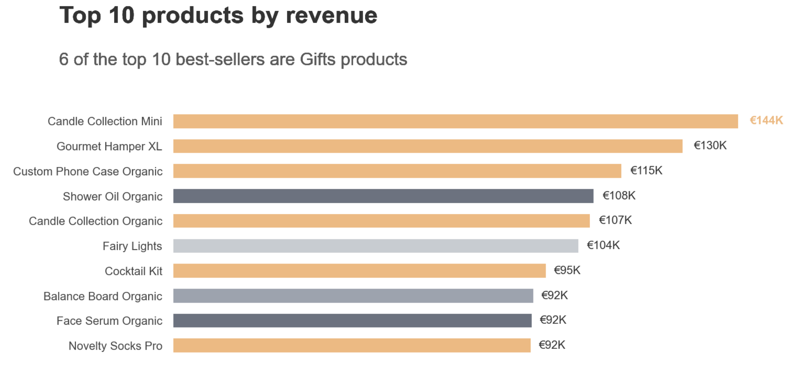

← Alle Projekte
Abgeschlossen
Datenvisualisierung & EDA
Explorative Analysen mit klarer redaktioneller Aussage, darunter Ausreißer-Erkennung im Kundenumsatz, Top-Produkte nach Umsatz und Geschlechterunterschiede in der IT.


Ansatz
Statt reiner Explorationsgrafiken steht bei jeder Analyse zuerst die redaktionelle Aussage fest, bevor die passende Visualisierung gewählt wird — Klarheit vor Technik.
Beispiel: Ausreißer-Analyse
- IQR-Methode (Q3 + 1,5 × IQR) zur Identifikation von Kunden mit ungewöhnlich hohen Ausgaben
- 151 Kunden (1,9 % der Kundenbasis) oberhalb der Obergrenze von 6.790 €
- Visuelle Hervorhebung der Ausreißer direkt im Histogramm statt in einer separaten Tabelle
Weitere Analysen
Top-10-Produkte nach Umsatz mit Kategorie-Highlighting (6 der 10 Bestseller stammen aus der Kategorie Gifts), Kundenalter nach Altersgruppen und Geschlechterunterschiede in der IT-Branche — jeweils mit Fokus auf eine klare, eigenständige Kernaussage pro Chart.